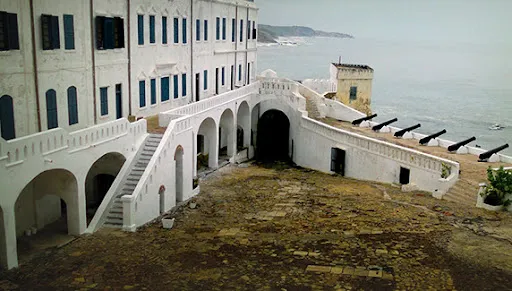
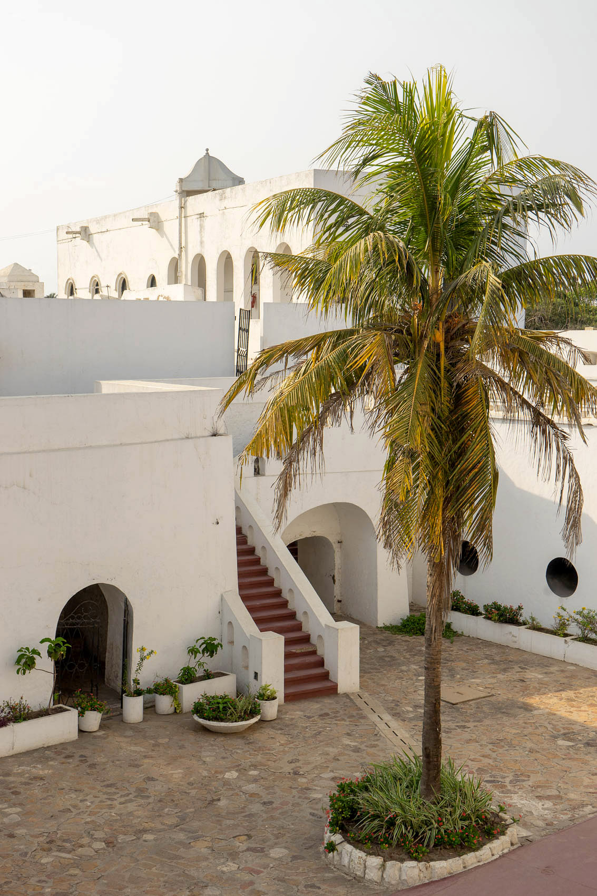
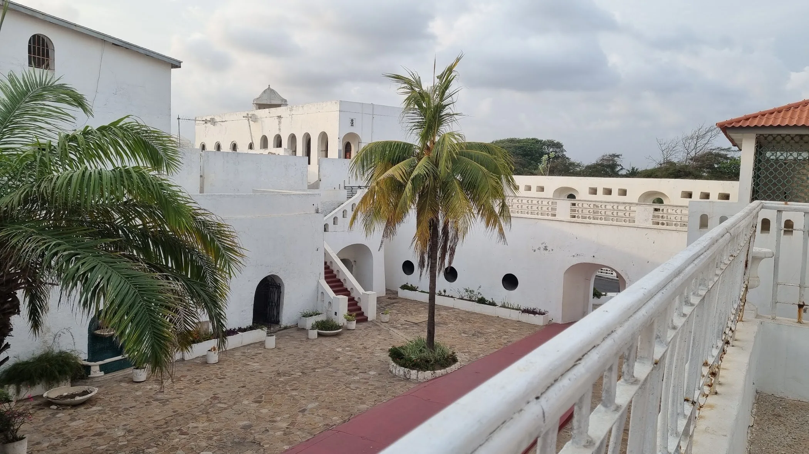

Christianborg Castle
A historic landmark with a rich and complex past.
Christianborg Castle
Christianborg Castle, also known as Osu Castle, is a historic landmark located in Accra, Ghana. It has a long and complex history, having served as a Danish trading post, a slave fort, a seat of government for both colonial and post-colonial Ghana, and now houses various government offices.
The castle offers a glimpse into Ghana's colonial past, with dungeons and other structures that bear witness to the transatlantic slave trade. It also showcases the evolution of Ghanaian governance, having served as the seat of government for several decades.
Things to See and Do
- Explore the dungeons: Visit the dungeons, a sobering reminder of the transatlantic slave trade.
- See the Throne Room: Admire the Throne Room, where Ghana's presidents were once sworn in.
- Learn about Ghanaian history: Discover the castle's role in Ghana's history, from its Danish origins to its modern-day function.
- Enjoy the views: Take in the panoramic views of the Atlantic Ocean from the castle walls.
- Visit the surrounding area: Explore the nearby Osu neighborhood, known for its vibrant street art and lively atmosphere.


